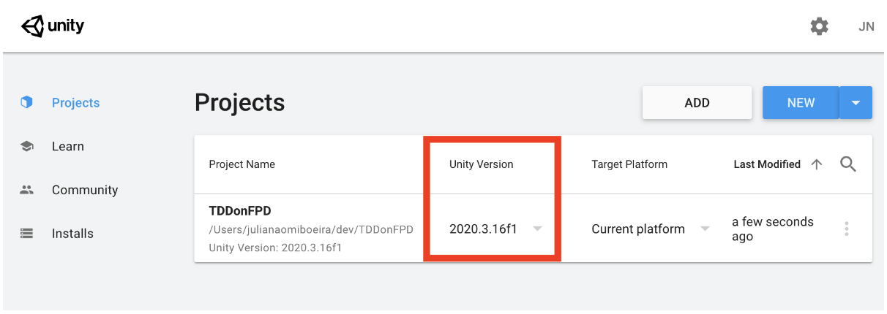
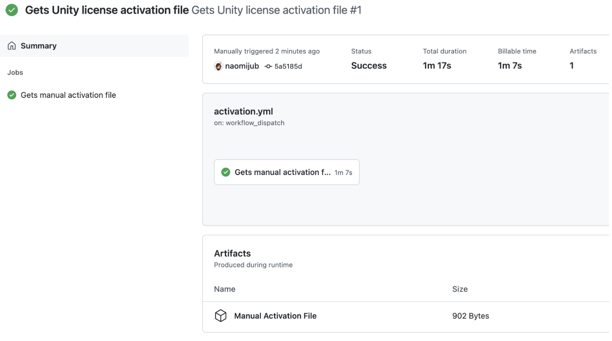
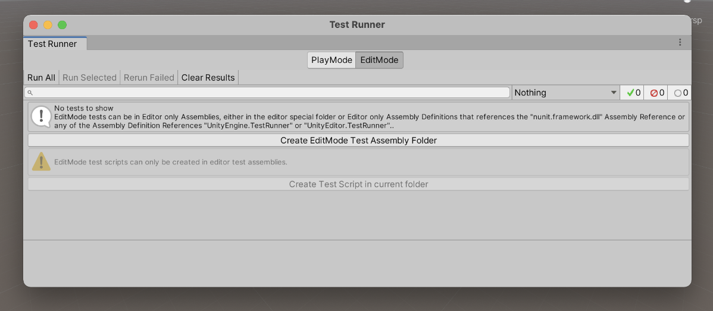

Unity FPS game with TDD
By Julia Naomi Boeira.
Associated repository: github: naomijub/FPSwithTDD

Target Audience
For a long period of time, the gaming industry seemed resistant to agile methodologies, sadly, it seems to come from a few frustrated attempts to introduce agile methodologies in daily routines. I believe that this failed attempts happened because people did not try to adapt the frameworks to their worlds or people tried to introduce "the agile" framework as unique and undivisible thing, which made people see the framework as more than it really is and forgetting from where agile methodologies come from, the Agile Manifesto.
- Individuals and interactions over processes and tools
- Working software over comprehensive documentation
- Customer collaboration over contract negotiation
- Responding to change over following a plan
What seems to have been the most common error is the inversion right in the first line of the manifesto, since it seems that the game development world was going "processes and tools over individuals and interactions". More than that, the industry took processes, tools and frameworks in a quite rigid and inflexible perspective, which is pretty sad, being such a dynamic industry. There was even an article, Agile Game Development is Hard by Rob Galanakis, in 2014, demonstrating the anti-agile mindset. Happily, in the past 5 years I have seen a great amount of change in this context, which makes strategies like TDD for game development something more useful and welcomed in a more friendly manner to the gaming industry.
Besides that, I see TDD (test driven development) as a manifestation of the second principle in the manifesto. I believe this is due to the fact that a well tested code can be seen as documentation, proves the code is working and it has a minimal standard of quality.
Having said that, I believe this book is great for everyone that wishes to improve their coding skills, learn TDD and learn Unity Development. Beginners will have the opportunity the learn step by step how to develop a game with detailed explanations over the language and tooling used, more advanced users will have a nice alternative to learn TDD, indie developer will be able to improve their testing skill, and for big studios this book is an opportunity to improve the general code quality and challenge their developers.
Understanding TDD and other Agile practices
- Deepdive into TDD
- What is TDD
- Why use TDD for Games
- When to use TDD
- Learning the TDD Way
- CI, Why does it matter?
- CI for Games
- Introduction to game testing with game engines and setting up a test environment
- Best Practices Writing Tests
- Summary
Chapter 1: Deepdive into TDD
To understand TDD, which means test driven development, we need to understand the concepts of test to code. Which basically means that we need to have a perspective of what we want before starting developing the game. This has to be done in a way that we know beforehand which tests we are going to write and how we can iterate over them to develop our game. Also, it is important that our tests have a positive impact in our code, as redundant testing doesn't really improve the code quality, therefore, simply writing a test that passes right away doesn't improve our code, even though it can be useful sometimes outside the TDD flow. This means that a meaningful test has to break the current game flow, by failing, and the code that we write from that point on should be the minimum for our test to start passing. More than that, just passing is not enough, it should pass the test that we have written and not break the other tests that we wrote. There is a famous image on TDD that is sometimes called the mantra of TDD "red (test), green (code), refactor' which I would like to explain:
Image: TDD Cyle
Unfortunately this image may not be very intuitive, so let's explain it a bit.
- We need to understand our test cases and what we want from them.
- We do that by writing the smallest test that fails and aggregates value to our game, considering how we planned for the game to be developed.
- Having a failing test is something that we can't accept, so we write the minimal amount of code that makes our failing test pass without failing all of our other tests.
- Now we can go further and refactor our code. Refactoring means that we will look for code smells, redundancies and things we can eliminate, so that we can improve the code quality. To do that we need to make sure all our tests keep passing.
- Now we can loop back to step 2 until there are no more test cases.
- At last, all our test cases are done. We can check if it integrates and it is functional within our code.
- Go to step 1 again for other test cases.
Chapter 2: What is TDD?
TDD is a software development practice developed by Kent Beck alongside the eXtreme Programming (XP) methodology. TDD's idea is to develop a system based on its test cases. Therefore, you should elaborate your test cases and then elaborate them into tests in such a way that the planned functionality should evolve from the demands of each test written. As the code solution is implemented right after the test is written, TDD is a continuous cycle of testing and coding.
TDD has a few important characteristics:
- Frequently execute your tests. If your tests are being executed frequently it is easy to know the general state of the code. This doesn't mean that you need to run all your test pipeline all the time, but it is useful to run them every time you finish a feature.
- Keep your code tested. It is important to keep your code tested, especially at the unitary level. The smallest code units you test, the easier will be to fix bugs.
- Think of a failing test as if it was a failing project build. If a developed code makes its respective test fail or even another test fails, you should deal with it as if you are putting a bug into the game. Some people just delete the written code and try again from scratch. Finding what works for you is crucial.
- Keep your tests simple. Complex tests may not be testing the units they were supposed to test.
- Test cases should be independent from one another. Each test should only test its unit, component, functionality or how two specific parts work together.
Some advantages of TDD can be:
- Code becomes cleaner, more readable and more maintainable.
- A more modular code. Which also increases code testability.
- You will have a higher test coverage.
- You will possibly find one of the simplest solutions to your problem.
- You will have less defects.
- You will have less bugs.
- You will have extensive documentation of what your code does.
- A more eloquent design of the code.
As there is no silver bullet, here are some disadvantages of TDD:
- TDD won't prevent bugs that your test cases introduced or that you have not thought of, this is why things like regression tests can help.
- To some people, TDD is a slower process. In my opinion, if you don't do TDD you will be required to work more finding bugs.
- All team members got to do it. If only one member includes untested code, that can become a problem to refactor and control in the future. Code reviews help with this item.
- When a requirement changes, your tests need to change as well.
Why are there so many poorly tested codes?
Would you use a bullet proof vest that was not tested? If not, you should start seeing test development the same way. Let me tell you a small secret, a bunch of years ago I did not like TDD, unit testing and many other test cases that I, as a software engineer, should be writing. I would mostly test code, global variables and local variables printing data to the terminal, and now, here I am evangelizing in the name of TDD. What happened?
As a game developer, in the past, I wrote many untested lines of code, and the result was that I always had to rewrite part of it, sometimes due to some manual testing and most often due to code so complex that was unreadable. This became one problem less the moment I adopted TDD. Of course, in the beginning I took way longer to write my code, but in general there was no need for rework and I could deliver more value through my code.
Besides that I realized a few reasons why testing was so poorly made in the gaming industry and the software industry as a whole:
- If tests are not easily comprehensible, bugs can be added to the program generating catastrophical situations.
- Tests are usually written after the code, which is a problem because whoever wrote the algorithm doesn't want to go back to coding if from the beginning to find a solution, so the test is usually made to fit the current code.
- Tests are usually written by people different from the ones that wrote the code, which can mean that they may have the wrong interpretation of what the code should do or even are just thinking of different requirements. Also, it is harder to test unitary blocks.
- If the person that writes the tests writes it based on documentation or artifacts, any upgrades can make the tests become obsolete.
- Non automated tests don't run frequently and may not be executed the same way each time.
- Fixing a bug in one place may cause a problem elsewhere. Test coverage guarantees some safety over this.
And TDD may solve all of these problems as the person that develops the code will test it first, guaranteeing test coverage and testability. It is easier to execute tests in an automated manner. Bugs can be identified quickly and with punctuality, which will be guaranteed by test coverage. And at last, whenever the code is delivered, the tests are delivered alongside it, which improves maintainability.
Chapter 4: When to use TDD?
As I said before, TDD is not a silver bullet, but it does have a strange effect on you. Although it is not always necessary, once you get used to it, you will probably do it anywhere. TDD can greatly be applied to the following scenarios:
Browser front-end development. Whenever someone is developing a web page, it may be very interesting to develop it with TDD as web pages usually have different usage possibilities and you want to make sure that the user will have a great experience using it. Also, it is important to make sure your system is able to handle the data received from the back-end and correctly renders it. Here you can have a whole pyramid of tests with unit tests, integration tests, functional tests, UI tests.
Microservices and back-end. They run the web, but now imagine your bank doesn't test how your money will be handled and saved. This means that any bug can cause you to lose a great amount of money. Backends are the origin of TDD usage and they are critical for games as well. Most common tests for backends are unit tests, integration tests, contract tests and some end-to-end testing.
Mobile apps. This is very similar to front-end requirements, as mobile apps can cause your user to have a terrible experience, but more than that, they are constantly updated, so having a good CI is important for them.
Games. Well, if we test UIs for mobile and for browsers, why can't we test UIs for games? There is the random state factor, but this can easily be solved by pure functions which would allow our logic functions not to have side effects and they will generate a precise response and a precise UI. With precise states for UIs we can define how we want our game UI to look like. Also we can test the connection to our servers and how they affect the general game state. Again, you can have a whole pyramid of tests with unit tests, integration tests, functional tests, UI tests.
IoT and Embedded. Just imagine the chaos it would be if your television had a bug that turned on your microwave, which you left something inside, when you are not expecting it to happen. Or just imagine a critical bug failure in the airplane you're flying. Testing these for unit level and integration level seems quite important.
But I said that it couldn't be applied to all scenarios, right?
Famous and known algorithms. You can use TDD to solve a merge sort algorithm, but you probably won't get to a better solution than the classical algorithm. So, although testing can give you confidence that you wrote the correct solution/algorithm, TDD won't actually help you to find the best solution every time. Though it does help to have a cleaner code.
Research and Development projects. These kinds of projects usually are just spikes or proof of concepts, and they are made just to prove a point or show a new technology. Although testing them could be beneficial, for later usage, it can be time consuming.
There are more cases for both sides, but I see this as the most important scenario to discuss TDD.
Chapter 5: Learning the TDD Way
Now we can start speaking about TDD for games, so in this chapter we will learn about test pyramid and test levels, how to think of test cases and what would be a minimum viable game from a testing perspective.
First of all I would like to start with one definition of test levels that I find the most interesting. However there are many more and many that are different from mine, you and your team should reach a consensus over this topic before starting.
- Unit testing. They should be testing a fundamental part of the game like a logic, a function, a routine and some controlled behavior inside a namespace or a class. They are the most common type of tests in TDD books and they usually use some variant of the word ASSERT to define the logical boundaries of the test.
- Functional testing. They test if a function or an object reacts to some behaviour in an expected manner from a black box perspective. So they usually do this by using some input and observing the output.
- UI testing. Sometimes they are put together with the functional testing, but they represent a test that takes a screenshot and compares it with an expected image.
- Component testing. They test if the execution of a game object, a package, a subroutine or an internal program are working as expected. A good example would be to test the reactions of a NPC when reacting to the player.
- Integration testing. This can be a little confusing in the game industry as many people call component tests integration tests as well, sometimes even functional tests. But in general it tests the communication of our game with external resources, like servers, kinect, controller and audio. Testing player input can be a great example.
- End-to-end testing. I would say this is the simplest test for games, it would be an automated gameplay test.
One very important aspect of TDD is the test pyramid, as it represents loosely how much of each test your project should have. In a general sense the more unitary and low level your test is, the more of this kind you need to have, while tests that take longer or are more high level should have less amount. This is due to the fact that unit tests are way cheaper than integration tests, which are cheaper than end to end and UI tests. So the pyramid base should contain a lot of Unit tests, followed by a bunch of integration tests, a few functional and UI tests and very little end-to-end tests. Projects can separate tests by functionality, classes and context or by pyramid level. Which one to choose depends on what you and your team prefer and both of them are valid.
Imagining simple test cases for a game
Talking about a minimum viable game I was inspired to find out which would be the test cases for a movement mechanic in a platform 2D game and what a player would expect from it. For example, in the last project I participated in, a few colleagues of mine were having trouble understanding that we should first define and validate the mechanics that we want so that we could start fine tuning them. The result was that they didn't listen to me, were only preoccupied with the fine tuning of the first mechanic, which resulted in the fact that they almost blew the deadline and the result was terrible because we had one good mechanic and a lot of terrible mechanics.
Considering the basic move mechanics of a platform 2D game, like Mario, we would have walk, jump and fall mechanics. So how could we test them?
Walk Mechanic
| Feature | Character must move alongside the X axis | |--- |--- | | Input | Keyboard input | | Test Case 1 | Any key is pressed on the keyboard. | | Test Case 2 | Directional keys were pressed on the keyboard (left/right or a/d) | | Test Case 3 | When the left key is pressed the character moves left | | Test Case 4 | When the right key is pressed the character moves right | | Test Case 5 | When any other key is pressed, nothing happens in the X axis. | | Test Case 6 | Character collides with walls | | Output | If the new position is as expected, the test passes, else it fails. |
Jump Mechanic
| Feature | Character must jump | |--- |--- | | Input | Keyboard input | | Test Case 1 | Spacebar was pressed | | Test Case 2 | When spacebar is pressed character moves alongside the Y axis | | Test Case 3 | The character moves correctly from bottom-up. More than one assert may be needed for this test. | | Test Case 4 | The character moves correctly, when falling from the jump, from top-bottom. More than one assert may be needed for this test. | | Test Case 5 | When a directional key is pressed, the jump occurs alongside the X axis as well. | | Test Case 6 | Verifies if a jump with directional keys pressed is parabolic. | | Output | If the new position is as expected, the test passes, else it fails. |
- Usually a complete jump requires at least 5 assertions to check for correct movement.
Fall mechanic
| Feature | Character must fall into holes | |--- |--- | | Input | Character collides with scene | | Test Case 1 | Character collides with floor | | Test Case 2 | Character collides with aerial blocks | | Test Case 3 | Character falls into holes (gravity testing) | | Test Case 4 | Character falls into holes following a horizontal launch. | | Test Case 5 | Same as 4 but from aerial blocks | | Output | If the new position is as expected, the test passes, else it fails. |
Engineers may find very different ways to solve these test cases. However, the most important part is to keep the test cases simple and the test resolutions and assertion even simpler. If any step gets hard or confused, a good strategy is to take a step back to the intermediary test cases and try to grow the concept from them. This also helps to refactor and evolve the code.
So now, we can consider that you already know the basic principles of TDD and we can start developing our own game.
Chapter 6: CI, why does it matter?
First of all, CI means Continuous Integration and it is a development practice where developers integrate code into a shared repository frequently. Each time someone integrates with the integration engine, automated builds, automated formatting, automated linting and/or automated tests may be executed. Another step that is sometimes used is Pull Request reviews and some continuous delivery practices.
Why should we be concerned about CI?
CI strategies don't really reduce bugs, but they definitely help detecting them quicker, as the code is frequently integrated so that build systems and test runners are always running. Whenever they fail, a bug might be present and some action needs to be taken. Having said that, we can point out a few benefits of CI strategies:
- Bug detection - besides the fact that tests and builds should be executed whenever the code is integrated and if anything fails it is quickly fixed before merging, detecting when other bugs occured or were introduced is way faster, so the mean time to resolution should be reduced.
- Version control - usually CIs are integrated with version control systems, which help us identify merge clonflicts and have a clear idea of the current code state.
- More test reliability - test reliability is increased as every test scenario is executed when weh commit any changes, making sure that each scenario that has a test is correctly tested for the current changes.
- Faster release rate - as the code state is always being checked, the main branch is always ready to be deployed and used.
- Reduces critical defects - as less bugs go into production, there are less critical defects to be dealt with after commiting, which in a general sense also reduces backlog, as they are probably not going to be introduced. Less bugs also mean less development cost.
- Easy Maintenance and Updates - as the code state is nearly guaranteed to be correct in the main branch, fixes and updates are easier to implement.
- Documentation - many CIs have a documentation generation and release from the code integrated into the main branch.
Only knowing the benefits doesn't make a CI happen, so we need to understand some of the basic practices associated with CI:
- Have all the code associated with a project or product in the same repository or in some integrated way. For example, monorepos for a product, each section of a product or a project in its own repository or core project in one repository and its libraries in another.
- Automated builds, whenever the code is integrated, execute your build system to check if everything is OK.
- Execute tests for every build - building can detect some specific or compilation errors, while testing can detect logic or functionality errors.
- Keep it quick - avoid long CIs as they make it more dificult to frequently integrate.
- Test the code in an environment similar to production - in microservices we usually use container-like strategies to develop and deploy in the same environment.
- Anyone can easily have access to the last stable build.
- Automated deploy - it is easy to release a test version or a beta version of the product whenever new features are included.
Besides knowing the basic practices it is important to know the methodology behind it. This is not the only methodology available, but it is one I find most versatile:
- Engineers clone the repository into their workspaces.
- When all changes are done, commit them to the remote repository.
- For committing into the main branch there are two most common practices. Feature branch, when all the code is committed into a new branch, a pull request is required and code review is done. Or, trunk based development, when all the team is in sync and agrees to some basic development practices and the commits are made directly into the main branches.
- The CI server monitors when changes are made in the repository and checks for formatting and linting.
- The CI server builds the game and executes its test runner.
- The CI server communicates if the build was successful
- In case of failure, the CI server communicates to the team.
- The team fixes the issues (build, testing, formatting or linting).
- The CI server delivers builds for beta testing or testing in the staging environment.
- Restart the process for another feature or update.
Team Responsibilities
For TDD and CI to work well there are a few possible team responsibilities that should be observed. Many teams develop their own rituals over these practices and responsibilities, by removing, changing and evolving them, which results in a self managed team, avoiding hierarchical and bureaucratic policies. A few of them are:
- Keep your code fork up to date.
- Check your code and the remote main branch frequently.
- Don't commit something that is broken in your machine.
- Don't commit untested changes.
- Don't add code to a build that is broken, unless it is to fix it.
- Don't abandon your code after the commit, wait for the CI to finish.
- Honestly review pull requests codes, also known as code review.
Code Review
Code review is a common agile practice that aims to share knowledge of what is being built as well as receiving feedback on the code that was written and improvements requirements. Besides that, it is usually associated with feature branch practice which enables the CI to be executed more frequently and no code is merged if things break.
Chapter 7: CI for Games
There are a large number of CI tools that are compatible with games. However, there might be some resistance to adopt them, so here are a few benefits not only related to the development cycle that can help to sell the CI usage:
- Non-developers can check the current state of the game at any time, considering that the CI triggers a continuous delivery process for alfa or beta versions.
- A press/media version can always be available, for example in a complete example scene.
- The publisher can always identify and keep up with the game's current version.
- It is guaranteed that the game works on different platforms that have been tested.
- It is easy to get the latest build version.
- Easier to identify bugs, which is really important to the business side as it can reduce the time to fix them as well as avoid releasing games with bugs.
CI for Unity
As I am of the opinion that every modern software project should have a CI/CD pipeline associated with it, Unity is no exception. There are a few options to configure a CI for Unity, but the most obvious one is Unity Cloud Build as it is Unity's native CI tool, it is very well documented and a complete up to date guide can be found in Learn Unity's website. However, it may not be the perfect tool for your project and it works better as a continuous builder only tool than a CI/CD tool. The other obvious choice is to use some kind of CI like Github Actions, GitlabCI, Travis-CI, Game.CI or CircleCI. Unfortunately, I have had a lot of problems configuring Unity's CI with Travis-CI and I do not recommend it, as even though it did work at some point, it has to be continuously fixed for future changes. So, as most of my projects are on Github I usually choose Github Actions as my CI.
The best way to create an Unity Github Actions is with the newly created Game.CI, which is a rebrand of Unity Actions, combined with Unity Builder for the build step.
Dockerizing Unity
Game-ci/docker are specialised Unity Docker images for CI and command-line tools, which are named unity-ci/editor and can be found at https://hub.docker.com/r/unityci/editor, choose your unity version. The only problem with this, so far, is the limited IL2CPP support (Ubuntu Only) and versions newer than 2019. You can find your Unity version in Unity Hub as the following image shows:
 Image: Project's Unity version in Unity Hub
To execute this docker image you can run docker run -it unityci/editor:ubuntu-2020.3.16f1-mac-mono-0 command, which means we want to run a docker container (unityci/editor), in interactive mode (-it) with the tag ubuntu-2020.3.16f1-mac-mono-0. The Unity editor will be located at /opt/unity/Editor as Unity. Now we need to create the activation file, to do that change your directory o the Editors directory by executing cd /opt/unity/Editor and run the command ./Unity -quit -batchmode -nographics -lgFile -createManualActivationFile, you will see a message saying Manual activation license file saved. The -quit flag tell Unity it need to quit after executing our commands, the -batchmode means it is only going to run on command-line, -nographics means no graphic device is going to be initialized, -logFile outputs the log to the console and -createManualActivationFile will generate a file that allows us to create a license for the docker. You can see the file executing ls and it will be named Unity_v2020.3.16f1.alf. To get the alf file content we can just execute cat Unity_v2020.3.16f1.alf and copy its content (from <?xml…> to ):
<?xml version="1.0" encoding="UTF-8"?><root><SystemInfo><IsoCode>C.UTF</IsoCode><UserName>(unset)</UserName><OperatingSystem>Linux 5.10 Ubuntu 18.04 64bit</OperatingSystem>__<UnityVersion Value="2020.3.16f1" /></License></root>
Save this file in your machine as the alf file and go to Unity's activation page to get our license file https://license.unity3d.com/manual. Download the Unity*.ulf license file, send the file to your docker container by executing docker cp ./Unity_v2020.x.ulf 1c25b08a74dd:/opt/unity/Editor, which means copy a file from file location in host to container_id 1c25… at path /opt/unity/Editor, container id can be found with docker ps, and activate it by executing ./Unity -batchmode -manualLicenseFile Unity_v2020.x.ulf -logfile. Now you can run any game commands with /Unity as long as your container has an associated Dockerfile to build the container with the necessary project files. The game commands that we will run inside the container are equal to the one we will execute, nextly, in github actions.
Configuring Github
There are not a lot of secrets to work with Git and Unity, one important thing is to make sure that you have an up to date .gitignore file and forcing your .meta files to be text mode. To generate and up to date .gitignore, I recommend checking https://www.toptal.com/developers/gitignore/api/unity, just take care when ignoring [Oo]bj and [Bb]uild because some objects and folders use those names and can be ignored. Basic steps are as follows:
- Create a repo on github.
git inityou local Unity folder or git clone from remote and start your unity project there. Ifgit initset your remote to the empty repositorygit remote add origin git@git.path.git.- Add a
.gitignoreand a License file if required. git add .and commit withgit commit -m "<your message>". Then push.- To create a new work branch you can execute
git checkout -b <branch name>. Another important issue in game development is file locking, Which means that only one person can edit a file at a time. This is because git cannot resolve merge conflicts for blob files with its standard tools. Sound effects, 3D objects, sprite sheets, fonts, tiles and binaries in general need locking, also, prefabs and even meta files can cause huge merging conflicts if not locked. The first recommendation would be to have your locked files concentrated in one or a few folders that don't have code or not frequently edited code.
Two important concepts that we can explore for this kind of behavior are partial clones and sparse checkouts. Partial clones allow us to avoid downloading large binary folders so that we can clone them whenever we need them in a just in time manner, discarding the binary objects history. This will help us work only with the latest binaries. A partial clone that removes binaries (blobs) is defined as a clone with a filter tag defining blobs to none, git clone --filter=blobs:none, which will download the blobs metadata but not the file content itself. The sparse flag, --sparse can be used to clone only the files in the root directory and can be used to avoid downloading the blob folders in less complex projects. The whole command can look like git clone --filter=blob:none --sparse git@git.path.git. To retrieve the missing folders without caring about their history you can use the sparse checkout command with the path to the folder/file, git sparse-checkout add /path/to/folder/or/file.
With these techniques we can discuss file locking. File locking works as follows, it is assumed that nobody can write to that file unless explicitly asked and if the file is unlocked. We can do this by using git-lfs file locking feature, which doesn't mean we need to store the files in git-lfs, but we just use its locking feature. To use git-lfs be sure you have lfs installed in your machine and CI and then install it in your project with git lfs install.
To use git-lfs locking feature we need to use a file called .gitattributes, which is a collection of file patterns and attributes, something like **/*.png lockable, that sets the attribute lockable to a PNG files in path **/*. To lock a file for local development you can type git lfs lock /path/to/file, you should receive a message saying Locked /path/to/file. This will lock the file in all branches. To unlock it add the changes, commit them and push, then run git lfs unlock /path/to/file, a message saying Unlocked /path/to/lock.
Configuring Github Actions
We have already generated a license, but now we need to generate a github/workflow that activates this license. First step is to go to your repository in github and click Actions, as Unity doesn't have a preset workflow you will need to click on set up a workflow yourself, which will automatically be called main.yml:
name: CI
on:
push:
branches: [ main ]
pull_request:
branches: [ main ]
workflow_dispatch:
jobs:
build:
runs-on: ubuntu-latest
steps:
- uses: actions/checkout@v2
- name: Run a one-line script
run: echo Hello, world!
- name: Run a multi-line script
run: |
echo Add other actions to build,
echo test, and deploy your project.
Now we can create another yml file named activation.yml, at .github/workflows, that will be responsible for getting Unity's license file:
name: Gets Unity license activation file
on: workflow_dispatch
jobs:
getManualActivationFile:
name: Gets manual activation file
runs-on: ubuntu-latest
steps:
- uses: actions/checkout@v2
- uses: game-ci/unity-request-activation-file@v2
id: getManualLicenseFile
- uses: actions/upload-artifact@v2
with:
name: Manual Activation File
path: ${{ steps.getManualLicenseFile.outputs.filePath }}
The name tag is just the name of the action to be executed and on: workflow_dispatch means that this will only be executed when we order it to dispatch. There will be one job named getManualActivationFile running on an Ubuntu machine. This workflow needs to be manually triggered and it will generate a Manual Activation File, to do this go to Actions > Get Unity license activation file > run workflow. Once it is done, the file will be available to download at the workflow execution under the name Manual Activation File. Download the file and unzip it to retrieve the .alf file and follow the same process as we did with docker to retrieve the .ulf file. Now go to your repository Settings then Secrets, copy the ulf file content and paste it into a new repository secret called UNITY_LICENSE.
 Image: Run activation workflow
Image: Run activation workflow
 Image: Download Manual Activation File
 Image: Paste ulf file content into secret UNITY_LICENSE
Image: Paste ulf file content into secret UNITY_LICENSE
For professional and pro licenses you will be required to have 3 more repository secrets:
- UNITY_SERIAL: the professional License serial key.
- UNITY_EMAIL: your Unity login email.
- UNITY_PASSWORD: your Unity login password.
Build your project on the CI
Now that we have our project CI configured we can start building it. It makes no sense to build our project in the CI without having a base project, so I recommend you to have an empty project with this step. Let's start simple and then expand our build.
The minimal build for the CI is under Jobs add this simple_build:
jobs:
simple_build:
runs-on: ubuntu-latest
steps:
- uses: actions/checkout@v2
- uses: game-ci/unity-builder@v2
env:
UNITY_LICENSE: ${{ secrets.UNITY_LICENSE }}
with:
targetPlatform: WebGL
This build will basically use your UNITY_LICENSE secret, which is accessed using ${{ variable }} syntax, to build your project targeting the WebGL platform. It maybe be useful to store the built artifact, for that you can add a new step after the unity-builder@v2 with the following configuration:
- uses: actions/upload-artifact@v2
with:
name: <Your build name>
path: build
But this build takes a while to execute and there is a simple way to solve this, which is caching the Library folder. If you check the build description, you will see it took a while to execute all the commands associated with the Library folder, so to cache it we can add:
- uses: actions/checkout@v2
- uses: actions/cache@v2
with:
path: Library
key: Library-${{ matrix.targetPlatform }}
restore-keys: Library-
- uses: game-ci/unity-builder@v2
Note that the cache step is before the unity-builder@v2 step and I have added a matrix.targetPlatform variable, which we will shortly use. If you have only one target platform, please use only its name.
To include multiple platforms, we will be required to define a strategy before defining the steps. We can do that by defining the strategy tag that contains a matrix tag with all platforms. Also, we can generate a different build for every platform by naming our build name: Build - ${{ matrix.targetPlatform }}.
build:
name: Build - ${{ matrix.targetPlatform }}
runs-on: ubuntu-latest
strategy:
fail-fast: false
matrix:
targetPlatform:
- StandaloneOSX
- StandaloneWindows
- StandaloneWindows64
- StandaloneLinux64
- iOS
- Android
- WebGL
steps: ...
There are many other build configurations that can be found in the GameCI/github/builder page, but for now we are going to start testing our game.
Testing your project on the CI
Just like unity-builder on CI, unity-test-runner expects some tests to exist, and to do that you should create some Unity tests, which are explained in the next chapter. Test runner is not that easy to start small and expand, because there are many nice configurations we can do to make sure we have a minimal adequate test setup. So, our test job looks like the following:
jobs:
testAllModes:
name: Test in ${{ matrix.testMode }}
runs-on: ubuntu-latest
strategy:
fail-fast: false
matrix:
testMode:
- playmode
- editmode
steps:
- uses: actions/checkout@v2
with:
lfs: true
- uses: actions/cache@v2
with:
path: Library
key: Library-${{ matrix.testMode }}
restore-keys: |
Library-
- uses: game-ci/unity-test-runner@v2
id: tests
env:
UNITY_LICENSE: ${{ secrets.UNITY_LICENSE }}
with:
testMode: ${{ matrix.testMode }}
artifactsPath: ${{ matrix.testMode }}-artifacts
githubToken: ${{ secrets.GITHUB_TOKEN }}
checkName: ${{ matrix.testMode }} Test Results
- uses: actions/upload-artifact@v2
if: always()
with:
name: Test results for ${{ matrix.testMode }}
path: ${{ steps.tests.outputs.artifactsPath }}
build: ...
Our job will be defined as testAllModes with a name tag that varies depending on the matrix.testMode. Unity-test-runner has three possible modes: playmode, which will only execute playmode test, editmode, which will only execute editmode tests, and all, which will execute playmode and editmode tests. As a quick reference, editmode tests are unit level tests that don't execute Start, Awake and Update functions from Unity's MonoBehaviour, while playmode tests execute those functions allowing you some control over how many update frames you want. The testModes are defined in strategy > matrix > testMode. We have already talked about caching, but we don't actually need the testMode variable for this test. Then we execute the unity-test-runner@v2 with UNITY_LICENSE, the with tag defines parameters to be used, in which testMode is one of the possible test modes, artifactsPath is where we want to upload our test artifacts, checkName is the name in which we want this artifacts to be and githubToken, which is automatically generated, allows us to the github status check results for our test. Lastly, we upload the artifacts with actions/upload-artifact@v2 step, defining that it will always be uploaded, if: always(), under the name Test results for $testMode in the path defined in artifactsPath.
Improving execution time
One thing that is annoying with this CI configuration is that some git large files take too long to execute. Fortunately there is a solution for this, which is to cache the Git Large File by adding this script after the checkout action, actions/checkout@v2:
- name: Create LFS file list
run: git lfs ls-files -l | cut -d' ' -f1 | sort > .lfs-assets-id
- name: Restore LFS cache
uses: actions/cache@v2
id: lfs-cache
with:
path: .git/lfs
key: ${{ runner.os }}-lfs-${{ hashFiles('.lfs-assets-id') }}
- name: Git LFS Pull
run: |
git lfs pull
git add .
git reset --hard
And the complete script is:
name: CI
on:
push:
branches: [ main ]
pull_request:
branches: [ main ]
workflow_dispatch:
jobs:
testAllModes:
name: Test in ${{ matrix.testMode }}
runs-on: ubuntu-latest
strategy:
fail-fast: false
matrix:
testMode:
- playmode
- editmode
steps:
- name: Checkout code
uses: actions/checkout@v2
with:
lfs: true
- name: Create LFS file list
run: git lfs ls-files -l | cut -d' ' -f1 | sort > .lfs-assets-id
- name: Restore LFS cache
uses: actions/cache@v2
id: lfs-cache
with:
path: .git/lfs
key: ${{ runner.os }}-lfs-${{ hashFiles('.lfs-assets-id') }}
- name: Git LFS Pull
run: |
git lfs pull
git add .
git reset --hard
- name: Cache Library
uses: actions/cache@v2
with:
path: Library
key: Library-Test
restore-keys: |
Library-
- name: Run test ${{ matrix.testMode }}
uses: game-ci/unity-test-runner@v2
id: tests
env:
UNITY_LICENSE: ${{ secrets.UNITY_LICENSE }}
with:
testMode: ${{ matrix.testMode }}
artifactsPath: ${{ matrix.testMode }}-artifacts
githubToken: ${{ secrets.GITHUB_TOKEN }}
checkName: ${{ matrix.testMode }} Test Results
- name: Upload artifact for test in ${{ matrix.testMode }}
uses: actions/upload-artifact@v2
if: always()
with:
name: Test results for ${{ matrix.testMode }}
path: ${{ steps.tests.outputs.artifactsPath }}
build:
name: Build - ${{ matrix.targetPlatform }}
runs-on: ubuntu-latest
strategy:
fail-fast: false
matrix:
targetPlatform:
- StandaloneOSX
- WebGL
steps:
- name: Checkout code
uses: actions/checkout@v2
- name: Create LFS file list
run: git lfs ls-files -l | cut -d' ' -f1 | sort > .lfs-assets-id
- name: Restore LFS cache
uses: actions/cache@v2
id: lfs-cache
with:
path: .git/lfs
key: ${{ runner.os }}-lfs-${{ hashFiles('.lfs-assets-id') }}
- name: Git LFS Pull
run: |
git lfs pull
git add .
git reset --hard
- name: Cache Library
uses: actions/cache@v2
with:
path: Library
key: Library-${{ matrix.targetPlatform }}
restore-keys: Library-
- name: Build for ${{ matrix.targetPlatform }}
uses: game-ci/unity-builder@v2
env:
UNITY_LICENSE: ${{ secrets.UNITY_LICENSE }}
with:
targetPlatform: ${{ matrix.targetPlatform }}
Note that I have added names for each step.
Deploying artifacts
Deploying artifacts with a CI is not a big mystery, and it is less of a mystery when we can combine Unity, Wasm, WebGL, Github Actions and Github Pages. In this example we will deploy an artifact to github pages, but the mechanics of doing so is similar in any platform:
-
- Generate a build to the target platform in your CI.
-
- Store that build somewhere.
-
- Have the platform deployment credentials stored in your CI.
-
- Run a script that can deploy the build with the correct credentials in the target platform.
For the github actions to deploy to github pages we need to build Unity targeting WebGL, which we already do in our build > strategy > matrix > targetPlatform > WebGL script. However, we still need to store the built artifact somewhere, which we can do by adding the following to the build script:
- name: Build for ${{ matrix.targetPlatform }}
…
- uses: actions/upload-artifact@v2
with:
name: build-${{ matrix.targetPlatform }}
path: build/${{ matrix.targetPlatform }}
Basically this means that after we build the artifact for matrix.targetPlatform we will use the action actions/upload-artifact@v2 to upload the artifact with name build-${{ matrix.targetPlatform }} in the path build/${{ matrix.targetPlatform }}. Now we need to configure github pages.
Configuring Github Pages
The first thing I do to use github pages is to create a github pages branch, which I usually call gh-pages. Having that branch created we can enable github pages in our repository by going to Settings > Pages. For our purposes now, the only important fields are sources and the checkbox Enforce HTTPS.
Enforce HTTPS is as it says, it enforces that your page is using HTTPS, while sources is where the configuration actually happens. You can see that your sources have a branch dropdown, choose the branch that you built items will be available, in our case gh-pages, than choose the folder that your build will be, usually there are only two options /root and /docs, I usually deploy to root. Hit the save button. Custom domain is in case you have a hosted domain that you want the code to be deployed to and theme is the theme style that you want your github pages to have.
For Github Pages WebGL projects on Unity make sure to set publishing compression format to disabled. To do this go to File > Build Settings > Player Settings > (Select WebGL icon) > Publishing Settings > Compression Format.
The deploy script
The deploy script cannot be executed before (or in parallel with) the build script, as it requires an uploaded build to generate its deployment. To make sure or this order we tag the deploy script with needs: build, then we give it a name and set it to run in linux:
deployPages:
needs: build
name: Deploy to Github Pages 🚀
runs-on: ubuntu-latest
steps: …
Now the necessary steps are to download the artifact from the storage and run an action to deploy it in github pages, we can do that with the following actions:
deployPages:
…
steps:
- name: Checkout code
uses: actions/checkout@v2
- uses: actions/download-artifact@v2
with:
name: build-WebGL
path: build
- name: Deploy 🚀
uses: JamesIves/github-pages-deploy-action@4.1.4
with:
branch: gh-pages
folder: build/WebGL
Now, check the github pages and play. The link to your github pages can be found in your repository at Settings > Pages.
One important notice is that to deploy to Android and iOS some packaging conventions may be required, for Android the package must be named com.YourCompanyName.YourProductName. More information on deploying to platforms may be found at game ci.
Chapter 8: Introduction to game testing with game engines and setting up a test environment.
For game development frameworks like Monogame, GGEZ, Raylib, Pygame, LibGDX, Phaser that behave like packages (libraries, crates, or, however, you call it), it is fairly easy to develop games and have a good test coverage on them. Sadly, most games developed with these frameworks are poorly tested or have no test at all. Besides famous game development frameworks there are a few game engines that allow us some level of testing, especially when we use the language native testing resources, like Panda3D, Godot, Amethyst, AppGameKit and jMonkey. However, when we speak about the big engines in the market like Unity, Unreal and CryEngine the reality is not that simple. Fortunately, Unity has been putting great effort into making games testable.
I first heard of automated testing in Unity a few years back when they released the package called Unity Test Tools. This package was deprecated and later included in the current Unity Test Runner, which is now incorporated into the engine. Test runners are basically a test executor and in the case of Unity a test executor that can run specific Unity tests. Also, around the same time I saw a few talks from Tomek Paszek and in one of them he expressed that one of the motivations behind the Unity Test Tools package was the fact that some parts of unity were being developed with unit testing, but there was no testing resource for the games themselves.
Currently it is fairly easy to find resources about testing and game development, and there is even an article written by Sophia Clarke called Testing Test Driven Development with Unity where she explores the viability of developing a game with TDD in Unity. Also, I highly recommend reading the NUnit C# test package documentation, as it is the default test package for Unity.
Now we can start the test environment setup and run some simple tests.
Configuring the Unity test environment
The first thing we need to do is download the latest Unity version, this book was written using Unity 2020.3.16f1 LTS, so the test setup is supposed to be usable in a few later versions, as well as versions 2018 and 2019. With the Unity Hub downloaded, login and activate your license. Then choose version 2020.3.16f1 LTS and download it.
Unity has two type annotations, [Test] and [UnityTest]. The difference between them is that UnityTest can execute in playmode and make assertions over actions and events in playmode, while Test executes only over functions that are independent from the playmode, namely editmode. The following step by step may seem trivial, but as it can be little altered from version to version, it is important to have it written down so at least for the 2020 LTS version, anyone can do it.
- Download UnityHub from https://store.unity.com/pt/download.
- Login and activate your license in preferences.
- Download Unity version 2020.3.16f1 LTS.
- Click in NEW to create a new project.
- Choose the 3D template and a project name. My project name was FPSwithTDD.
- To find the test runner go to
WINDOW > GENERAL > TEST RUNNER.
 Image: Unity test runner
- At first, the Test Runner should be empty as no test has been configured. To create a
Test Assembly Folderyou should click inCreate EditMode Test Assembly Folderand then a folderTestswill be created. - If we open the
Test Assembly Fileinside theTestsfolder we will see a bunch of pre-selected configurations. Be sure to check the desired test platforms in theplatformsfield. - Now we need to create a demo test, to do that click on
Create Test Script in current folder. I named my new test scriptDemoTestScript. If we open the test script we will see that the two testing frameworks are being used usingNUnit.Frameworkfor using[Test]andAssertas well as usingUnityEngine.TestToolsfor using[UnityTest].UnityTestshould have a return type ofIEnumaratorand you can useyield return nullto skip 1 frame.
using System.Collections;
using System.Collections.Generic;
using NUnit.Framework;
using UnityEngine;
using UnityEngine.TestTools;
public class DemoTestScript
{
// A Test behaves as an ordinary method
[Test]
public void DemoTestScriptSimplePasses()
{
// Use the Assert class to test conditions
}
// A UnityTest behaves like a coroutine in Play Mode. In Edit Mode you can use
// `yield return null;` to skip a frame.
[UnityTest]
public IEnumerator DemoTestScriptWithEnumeratorPasses()
{
// Use the Assert class to test conditions.
// Use yield to skip a frame.
yield return null;
}
}
- To run the tests go to the Test Runner and click
Run All.
 Image: Executing all tests
Image: Executing all tests
- There is another annotation that may be interesting to know.
[UnityPlatform]helps us determine the target (or excluded) platform to execute the tests. To define a target platform, let's say Windows, define it as[UnityPlatform(RuntimePlatform.WindowsEditor)]. To exclude Windows platform we can just use[UnityPlatform(exclude = new[] {RuntimePlatform.WindowsEditor })]. - Finally, it is important to know that if you want to test logs you can use the Unity assertion for logs as follows:
LogAssert.Expect(LogType.Log, "Log message").
Writing our first test
The first test we will write is a check to know if our player is alive. To do that we need to create a new test script, which I will call PlayerAliveTestScript, go to the Tests folder and click in Create > Testing > C# Test Script and rename it. I have created only one [Test] defined by public void IsAlive_WhenInstantiated_ReturnsTrue().
Now we need to create a Scripts folder and in it I have created a script called PlayerLife. This script will have a function called IsAlive that will return a bool. And now our test IsAlive_WhenInstantiated_ReturnsTrue will be testing if the function call IsAlive on the variable player of type PlayerLife is true. The test will look like this:
[Test]
public void IsAlive_WhenInstantiated_ReturnsTrue()
{
var player = new PlayerLife();
Assert.AreEqual(true, player.IsAlive());
}
So, we need to make this test compile creating the function IsAvile in PlayerLife script. Be aware that if your script inherits from MonoBehaviour you should not use the new PlayerLife() declaration, it works with the warning "You are trying to create a MonoBehaviour using the 'new' keyword. This is not allowed. MonoBehaviours can only be added using AddComponent(). Alternatively, your script can inherit from ScriptableObject or no base class at all".
using System.Collections;
using System.Collections.Generic;
using UnityEngine;
public class PlayerLife : MonoBehaviour
{
public bool IsAlive() {
return false;
}
}
However, if we try to execute the test runner we will get a message saying "Assets/Tests/PlayerAliveTestScript.cs(12,26): error CS0246: The type or namespace name 'PlayerLife' could not be found (are you missing a using directive or an assembly reference?)". This compilation error is telling us that to associate the scripts with the tests we need an assembly reference. To solve this problem, we need to right click in Scripts folder and select Create > Assembly Definition. I named my scripts assembly definition as ScriptsDefinition. With this done, we can go to the Tests folder assembly definition and create a new Assembly Definition Reference by clicking the + button. And then drag and drop the assembly definition from the scripts folder into the Missing Reference new field.
 Image: Creating a new Assembly Definition Reference
Image: Creating a new Assembly Definition Reference
To make this test pass we can, for now, make it return true and have the test pass. The last step is to fix the warning "You are trying to create a MonoBehaviour using the 'new' keyword...". To do that we will need to define a SetUp annotation that creates a GameObject and adds the component PlayerLife to it. Now, instead of declaring a new PlayerLife() every time we need to access the MonoBehaviour, we can use GetComponent<PlayerLife>(). As follows:
using System.Collections;
using System.Collections.Generic;
using NUnit.Framework;
using UnityEngine;
using UnityEngine.TestTools;
public class PlayerAliveTestScript
{
GameObject go;
[SetUp]
public void SetUp() {
go = new GameObject("test");
go.AddComponent<PlayerLife>();
}
[Test]
public void IsAlive_WhenInstantiated_ReturnsTrue()
{
PlayerLife player = go.GetComponent<PlayerLife>();
Assert.AreEqual(true,player.IsAlive());
}
}
Summary
To remember important actions on configuring test environments in Unity I will sum them up here:
- You can find the test runner at
WINDOW > GENERAL > TEST RUNNER. - In the test runner click in
Create EditMode Test Assembly Folderand then a folder Tests will be created. - In the Assembly Definition of the tests folder, check all required platforms.
- To create a new test script just click the button with the message
Create Test Script in current folder. - To execute the available test scripts just click
Run Allin the top left corner of the test runner. - To create new tests you can just go to
Create > Testing > C# Test Script. - To use scripts outside the
Testsfolder you should define a Scripts folder and add an Assembly Definition to it,Create > Assembly Definition. The Tests folder should have an Assembly Definition Reference to the Scripts folder Assembly Definition. - Now you can use other scripts and tests them.
Chapter 9: Best Practices Writing Tests
C# best practices for unit testing
There are a few types of tests and best practices may vary depending on which test you are writing and how they are organized. One thing I like a lot is to separate integration and unit tests, usually doing it by putting in different folders. For Unity, you could separate unit tests from integration tests by creating two different folders with two different assembly definitions, like UnitTests and IntegrationTests, something like UnitTests and PlayTests.
Also, even in Unity, I like to avoid slow unit tests. To do so, I leave tests that will be slower, even if they are unitary, to run separately from the fast unit tests. Another thing is that I avoid too many dependencies in unit tests and if I have them, I tend to pass them as arguments, especially those that have side-effects. Speaking of side-effects, I usually try to avoid unit testing functions that have side-effects, so I usually write my functions as pure as possible, not like PlayerLife.IsAlive, which is mostly a getter.
Having said that we can point out a few important characteristics of a good unit test:
- Fast: good projects may have thousands or tens of thousands of unit tests, so they should execute quickly so that they can be executed more frequently.
- Isolated: they should be standalone and so be executed in isolation from other contexts, dependencies or external systems.
- Repeatable: They should be like pure functions, so for every time you run them, the same result should be expected. This, also, allows them to be executed frequently.
- Self-checking: this might seem dumb for people that are used to automated testing, but many game developers are not used to this concept. A test should be capable of detecting its success or failure without any human interaction.
- Quick execution: if a test takes too long to write or too long to execute, consider designing better tests or consider designing a code that is more testable.
Naming Conventions
C# has a good set of best practices and naming conventions for writing code and writing test, so when we are writing a new test we should consider the following three parts:
- The name of the method being tested. (
IsALive) - The scenario under which it is being tested. (
WhenInstantiate) - The expected behaviour of this scenario. (
ReturnsTrue)
Additionally we could declare the specific component that we are testing PlayerLife_IsAlive_WhenInstantiated_ReturnsTrue. Also, naming conventions are important because they explicitly express the intent of the test. This explicit expression is not just about readability as it serves as documentation for when someone is reading a test file to understand exactly what are the expected behaviours of a class, namespace, component or object.
Another topic that frequently causes confusion is the words Fake, Mock and Stub:
- Fake - fake is the generic term used to describe an object that is not real or doesn't behave as a real object. A fake can be a stub or a mock, it all depends on the context.
- Mock - A mock is a fake object that influences the behaviour of the test depending how it is described. So, in other words, a mock starts a fake until asserted against.
- Stub - A stub is a dependency or a collaborator system that controls how it is going to be used in regards to replacing a part of our test. The general advantage of a stub is that you can execute the test without having to deal directly with a dependency.
The last thing I want to talk about before starting our game is how to write the tests themselves and the two main things that come to my mind is to keep your tests minimal and follow some kind of pattern like Arrange, Act and Assert.
On the topic of keeping our tests minimal, it means that the input passed to the function being tested should always be kept the simplest possible, for example, Rust linting tool, clippy, warns you if your function has too many arguments. Another thing that is important to say about simple inputs is that they should be predictable, so we can achieve the same result for every test execution. What do we achieve with this principle? Tests become more resilient to future implementations and the test behaviour is closer to the expected functionality.
Lastly, on the Arrange, Act, Assert topic, it is a common pattern when writing tests and, as the name implies, it breaks down into three sets of actions:
- Arrange - create necessary objects and set them to the correct state.
- Act - define the action that will be tested.
- Assert - asserts that the act action has the expected value.
Now we have a clear idea of what TDD is and how to use it, we have configured our Unity test environment and we are clear on the test practices that we are going to use in this book. I would say we are ready to starting writing some great tests for our first person shooter.
Summary
In this book section we learned that:
- TDD is a continuous cycle of test, code and refactor that will always generate well tested code, a code that is probably simpler, as well as quickly identify bugs that would break other tests.
- We learned some TDD practices, like keeping your tests simple and independent from one another.
- Why there is so much poorly tested code, considering some of the history and biases that the game industry had.
- Why TDD is important for game development, which discusses the fact that games have an art/entertainment relation as well as the hardships of testing game UI and Gameplay.
- When to use TDD and the way to think about basic walk, jump and fall mechanics on the TDD side of things.
- How and why to use CI for game development and associate TDD with it.
- Important aspects of configuring a test environment on Unity like the test runner location and the necessary assemble definitions and references.
- Lastly, some best practices writing tests.
TDDing a FPS Game in Unity
Chapter 10: Developing a FPS game with TDD
Let us start by defining what is a FPS game. FPS means First Person Shooter and it is that kind of game where you only see a weapon and sometimes a HUD, it is first person because you play as if you were looking with your own eyes into that world. Another common type of game is third person, which allows you to see your playable character's body. Also, a FPS is a shooter game, which means that we will have some kind of weapon that shoots projectiles at something else.
Game Design Document
The Agile Manifesto tells us that we should aim for "Working software over comprehensive documentation", which I totally agree with, but on the other hand, having some documentation is also important to have a clear view of what our tests should do and how they should behave. I also agree that "Responding to change over following a plan" is clearly important for game development which means that this Game Design Document will only serve as an initial reference to what the game will look like so I don't really expect that the game will be just like the GDD, but I expect that the GDD will provide me with enough material and ideias to start planning ahead basic tests scenarios, scenes and implementations. As this will be a very simple GDD and a very simple game, I don't expect much conflict between them, but if it happens don't worry, it is how things happen in real life.
The Story
TBD
The Character Controller
Our character movement will be pretty simple. It will go forward by clicking w or up and back by clicking s or down. Also we can move sideways by clicking a,d, left, right. Last character controller feature that I want to introduce is something that I really like from games like Rainbow Six which is bend left and bend right, which will be q and e, respectively. Bending means that our character will look to rotate a little to the side with its origin being the character bottom. By pressing the space bar the character will jump and gravity will act on it.
The Camera
Like all FPS that I know, the camera will follow the character in a first person perspective and the character will look in the direction that the mouse is pointing. If you move when the mouse is pointing some sideways the character will move in that direction.
Weapons
TDB
The Enemies
TDB
Life Systems
TDB
How to Deliver
Delivering in this project will be done in github CI with the following steps:
- Test
- Build
- Deliver artifact to WebGL platform